Redesigning Mensio's Data Explorer for self-serve analysis
- Shipped
- Product Design
- Redesign
TL;DR
- Background
- Mensio tracks brand exposure across 185 TV networks and 2,000+ social handles.
- Problem
- Customers couldn't build charts on their own, so every custom request went through an analyst.
- Approach
- We studied the analysts' workflow and built their follow-up questions into a guided chart builder.
- Outcome
- Guided Setup shipped in 14 weeks. Customers now build their own charts.
Overview
Mensio is a powerful tool that tracks brand exposure across TV and social…
Brands, teams and networks use it for sponsorship and ad intelligence. It watches every second of 185 TV networks and 2,000+ social handles, and catches 13,000+ brand logos at 99%+ accuracy.
…but customers couldn't get the data out on their own.
Data Explorer showed every metric, grouping and filter at once. Customers didn't know which combination answered their question, so they leaned on Mensio's analysts to pull the data for them.
We redesigned chart building into Guided Setup, a step-by-step wizard with presets, and shipped it in 14 weeks.
Every metric in one dialog, with no order and no guidance.
Five steps in a fixed order, with the usual metrics pre-selected.
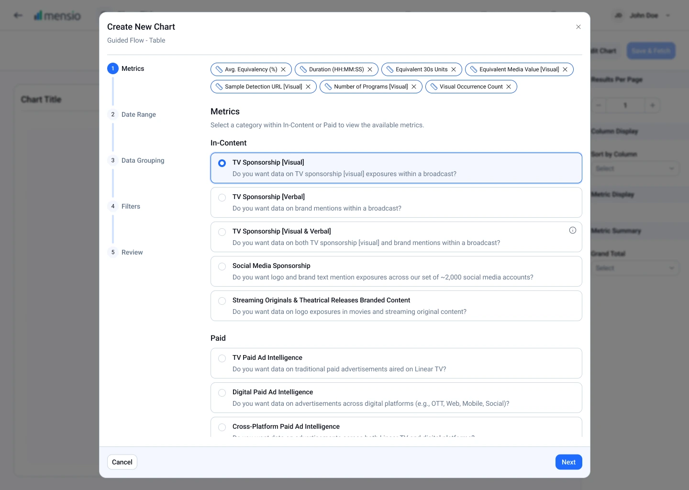
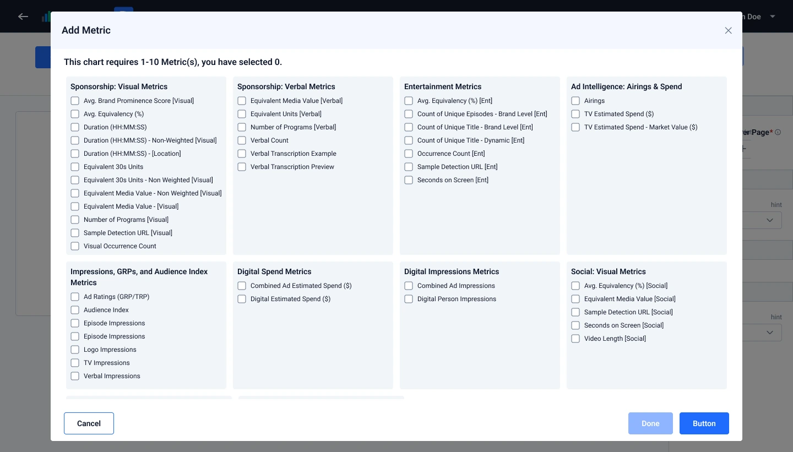
Starting assumption
We assumed customers were our primary users. We were wrong.
New to Mensio, we planned to start with customer pain points. Our first stakeholder conversations changed that.
What we assumed
Customers built their own charts, and their pain points would show us what to fix.
What we found
There were no documented customer pain points. Analysts were doing the work, so their workflow was what we needed to study.
The problem
Every custom chart went through an analyst.
A one-line customer email became an eight-step process across two people and three tools.
A custom request, step by step
- steps
- 8
- roles
- 3
- tools
- 3
- end to end
- ~1 day
The whole request
8 steps and 7 handoffs for one chart
About a day end to end. Hover or tap a step to see what happened there.
- 1
Customer
Emails a request
The customer emails one line, usually just a metric and a brand or program.
- 2
Analyst
Asks follow-ups
The analyst asks for the date range, live or replay, verbal or social, competitors and an asset breakdown.
- 3
Customer
Gets on a call
If email isn’t enough, the analyst and customer get on a call to pin the request down.
- 4
Analyst
Builds the pull
About 10 minutes in Mensio. Analysts pulled extra data so nothing would be missed.
- 5
Manager
Reviews the pull
A manager checks the pull before it can be saved and exported.
- 6
Analyst
Exports, cleans in Excel
The analyst exports to Excel and filters out what the customer didn’t ask for. This took about 35% of an analyst’s day.
- 7
Customer
Receives a file
The customer gets an Excel file, not a chart they can change themselves.
- 8
Analyst
Revises the pull
About 1 in 3 requests come back, often a month later, for roughly an hour of rework.
8 steps and 7 handoffs for one chart, about a day end to end. About 1 in 3 come back for rework.
Customers asked analysts to check their own pulls
Client, media agency
To: Mensio analytics team
Sponsorship value by team
We filtered to home games to avoid double counting. Is this right?
Client, brand team
To: Mensio analytics team
Checking my pull
Can you check the numbers look right?
Names, companies and brands removed.
Impact on analysts
Analysts spent most of their day fulfilling requests.
Impact on the business
Customers couldn't see Mensio's value or potential unless they used it themselves.
Low adoption
Customers stopped using Mensio or relied on analysts.
Weak renewals
Buyers rarely used the product after the demo, so they couldn't speak to its value at renewal.
Capped value
Mensio's full value was only reachable through the analytics team.
The insight
The process lived in analysts' heads.
Accurate pulls depend on knowing which filters and exclusions go together. Adding teams, for example, requires home, neutral and non-game filters to avoid double-counting. None of it was documented.
Design goalHave the product ask the questions an analyst would.
Analyst interviews
We studied the analyst workflow to rebuild it for customers.
Since analysts were doing the work, we studied their workflow to understand what customers actually received. We used Mensio daily and interviewed the media analysts who handled customer requests.
What analysts told us
Follow-up questions were consistent
Date range, live vs. replay, competitors, asset breakdown. Customers rarely specified these upfront.
Analysts over-pulled data
To avoid missing something, they pulled extra and filtered it in Excel.
Errors surfaced a month later
Finding a missing filter took about an hour, plus explaining the change to the customer.
Customers didn’t understand the data model
Groupings and filters, such as programs vs. episodes, caused the most confusion.
Click a note to bring it to the front.
“There is no checklist, so you are trying to remember off the top of your head…”
The analysts' follow-up questions became the structure of the wizard.
Wishlist to roadmap
We merged stakeholder requests and research findings into one roadmap.
Stakeholders brought a wishlist, led by a left-to-right flow. We validated each item against the interviews and prioritized what to build.
The stakeholders' left-to-right vision
- 1Data type
- 2Visualization
- 3Metrics
- 4Groupings
- 5Filters
- 6Date range
Streamlined left-to-right flow
Build a chart in sequence, not all at once
Same questions, every request
Analysts asked the same follow-ups, in the same order
Guided Setup
Five sequential steps, from metrics to review
Show only what's relevant
Guide customers through filter choices
Hidden nuances in data
Filters confused customers; 1 in 3 requests needed rework
Progressive options
Each step shows only what fits, with tooltips and guardrails
Offer pre-set views
Answers to the questions customers ask most
Repeated requests
Most were a metric plus a brand or program
Six presets
Based on the most common use cases
We chose a wizard as the core pattern. It matched the stakeholders' left-to-right vision and mirrored how analysts already worked.
Customer groups
Customer groups shaped the wizard's two branches.
Usage and common requests varied by group. From one entry point, people choose how to build a chart: a preset for recurring questions, or Guided Setup for everything else.
How often they use Mensio vs. how much they trust themselves
- 1Super users5–10 people, about 5%
- 2Power usersTweak dashboards
- 3High-involvement usersAbout 20 people
- 4New users & requestersOften the budget owners
Navigating the mess
Three flow variations led to our final wizard.
Feedback from analysts, engineers and stakeholders shaped each version. Hover a design to see what it became.
Three separate flows
Three paths became two
Presets, Guided and Custom confused the analytics team. We folded Custom into Guided Setup as “Frequently Selected Options.”
Full-page wizard
A full-page wizard became a modal
Backend constraints required a modal, so we redesigned the micro-interactions to avoid modal-on-modal.
Six-step flow
Six steps became five
We moved scheduling to the nav bar to keep the modal focused on building a chart.
The solution
Six design decisions shaped Guided Setup.
One path from question to chart
Every chart follows the same six steps, ending in one review before the data is fetched.
- Preset or Guided Setup
- Metrics
- Date Range
- Data Grouping
- Filters
- Review & Fetch
Presets for common questions
Six presets answer the requests analysts got most, from season totals to scatterplots.
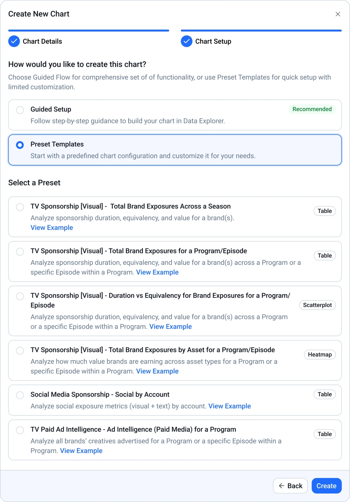
Smart defaults
Picking a metric group pre-selects its most-used metrics.
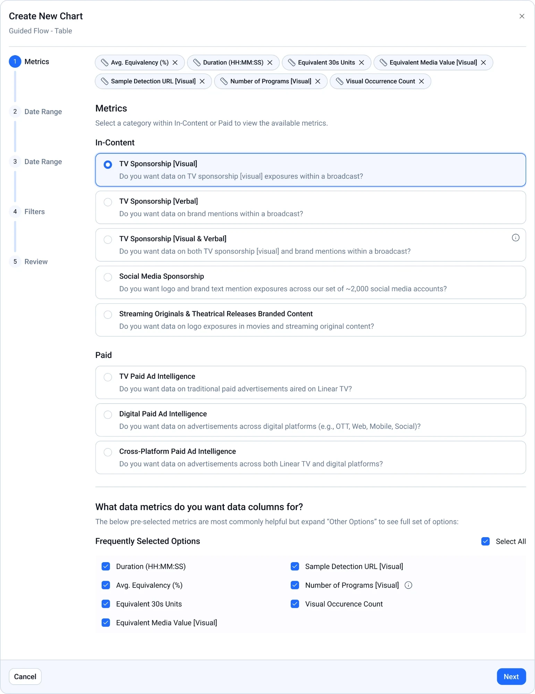
Duplicate and Add to Dashboard
Copy a chart or add it to a dashboard from the chart bar.
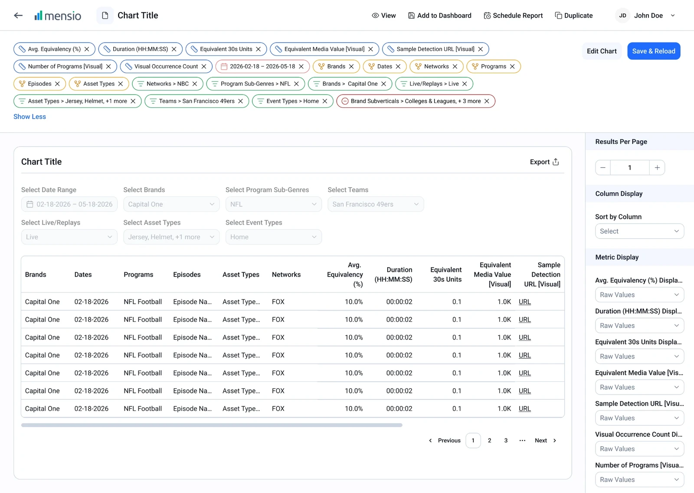
Guardrails in the copy
Tooltips explain the trade-off before customers make a choice.
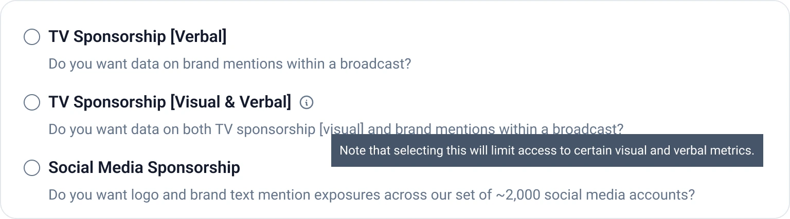
Chart types beyond tables
Scatterplots and heatmaps, which analysts had never built for clients.
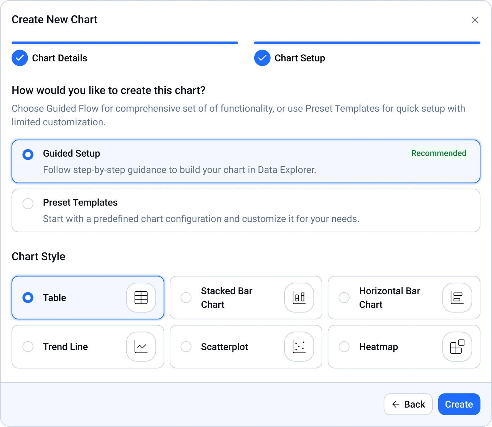
A Seasons date picker
Pick a league and a year, and the start and end dates fill in.
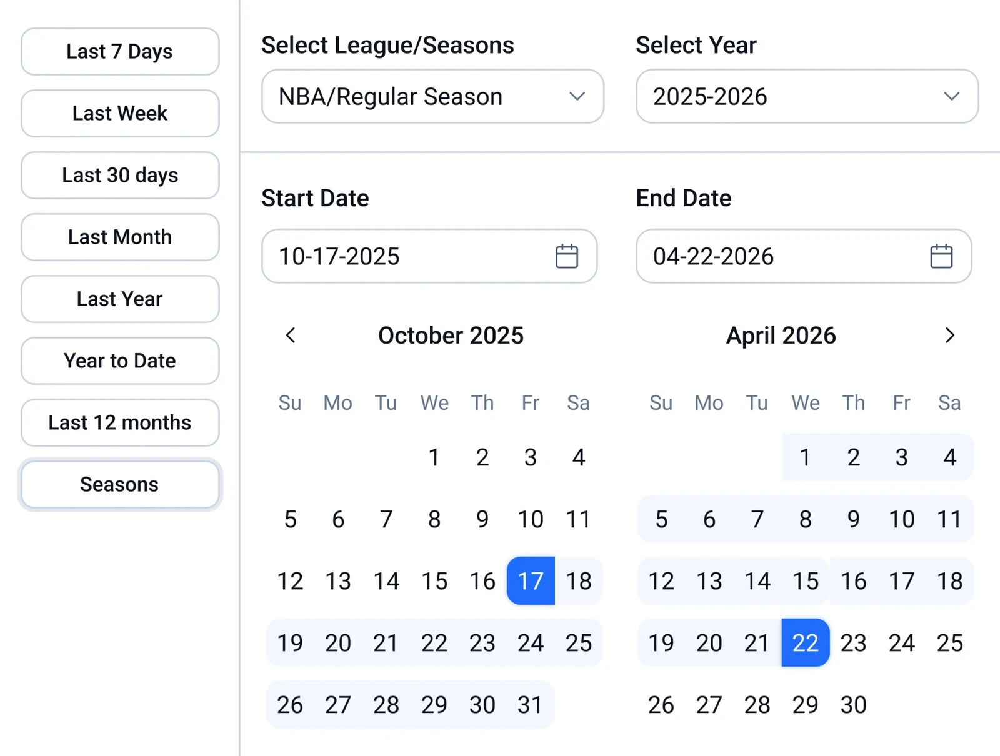
Select screens
Building a chart, from first click to the finished table.
One decision per step
A fixed order, metrics to review, so customers never face every option at once.
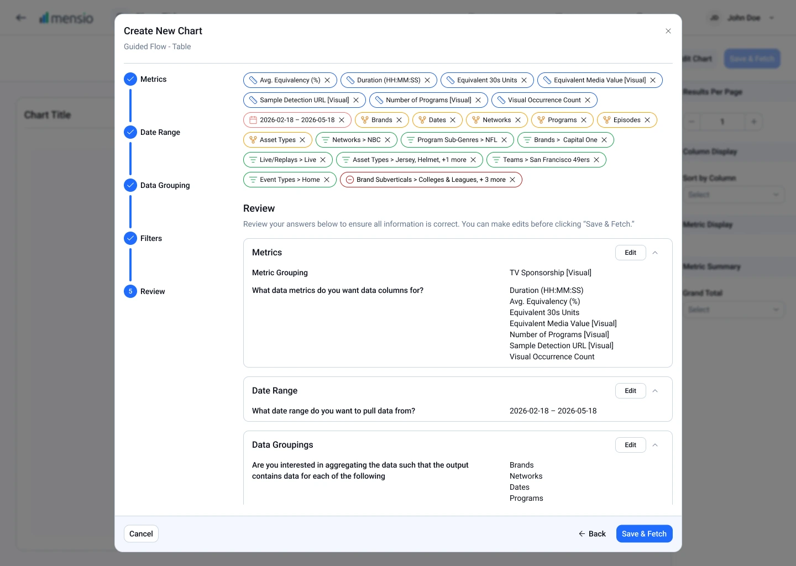
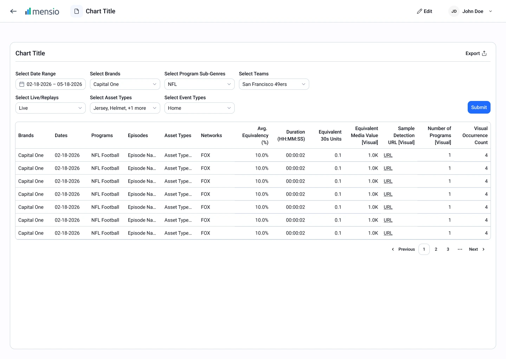
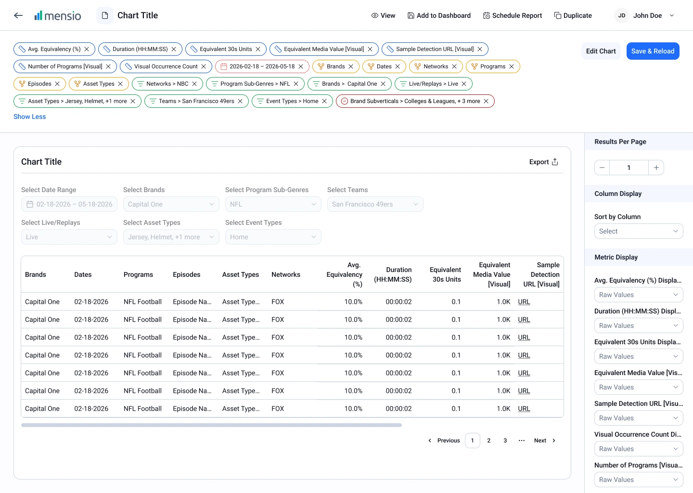
Design x Engineering
We designed within the backend's rules.
We acted as our own PMs, worked within the rules for valid chart combinations, asked for a Seasons API, and triaged QA by priority across a 14-week build.
In parallel, we built a new design system now adopted across all Deploy products, and mapped its components to Mensio's production screens.
Along the way, we found capabilities, like multiple date ranges, that neither the analytics team nor the engineers knew existed, and turned them into features.
Design QA, triaged P0–P4
Design QA
IllustrativeTo fix2
Save & Fetch stays enabled with no date range
Guided SetupTooltip covers the Next button on small screens
MetricsIn review2
Seasons dates don’t fill in after picking a year
Date rangeSelection pills overflow without Show less
Edit chartDone3
Stepper spacing differs between steps
Guided SetupPreset tags use the wrong text style
PresetsIcon size in the chart bar
Chart bar- P0Blocks launch
- P1Must fix
- P2Should fix
- P3Polish
- P4Nice to have
Impact & reflection
Customers now build their own charts.
- Clients now use scatterplots and heatmaps the team never built for them before.
- Multiple date ranges replace stitching several charts together in Excel.
- Customers know where the exclusion filters are, and why they matter.
Duration vs. Equivalency
Bubble size is media value · Illustrative data
Total Brand Exposures by Asset
Visual occurrence count · Illustrative data
Encode expert knowledge into the product
Presets, defaults and tooltips now ask what analysts used to ask over email.
Design with constraints, not against them
Working within the backend's rules shaped a simpler flow.